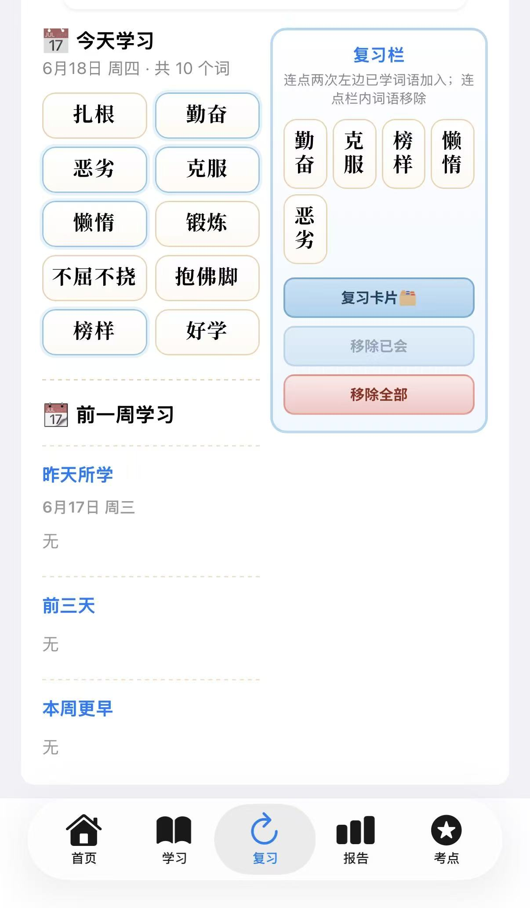
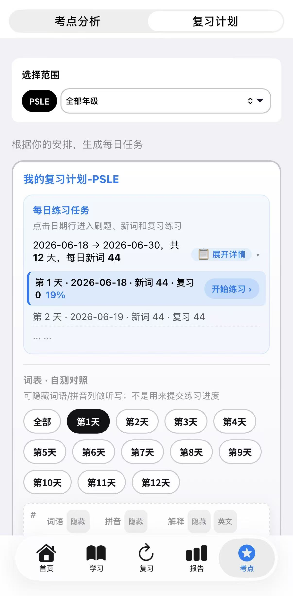
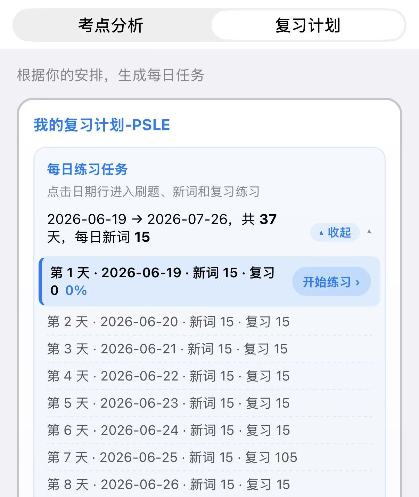
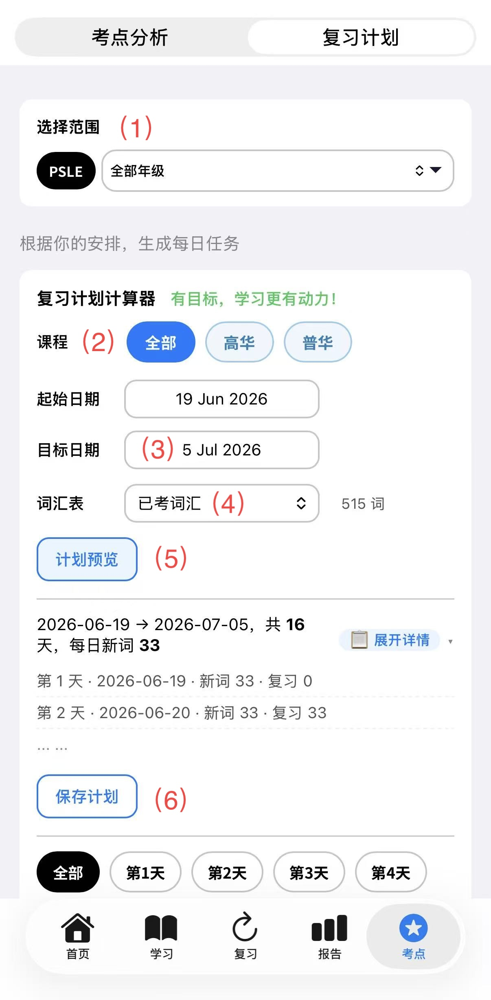
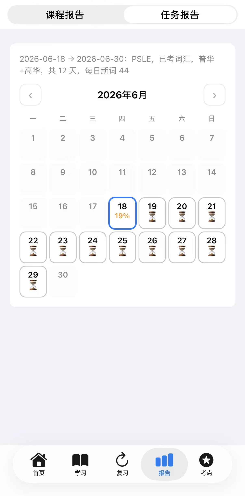

复习
根据遗忘曲线设计，主要强化最近学习过的内容，帮助孩子更好记住知识点。
复习计划
用于考试冲刺，把所有考试内容拆分成每日任务，在考试前一周或一个月逐步完成全部复习。
复习是「学完后的巩固」，复习计划是「考试前的整体安排」。



三者可以配合使用：平时用「复习」巩固，备考时用「考点」摸清方向，再用「复习计划」安排每天学什么。
每日任务的安排也参考了艾宾浩斯遗忘曲线，每日都安排两个列表：新词和复习词。
每日任务的第七天，安排了一个额外复习，复习最近一周学过的所有词汇，确保复习效果最大化。
每天连续背诵2个列表，并完成复习任务； 复习比记新词重要，按既定的记忆周期复习、再复习；鼓励孩子坚持挺过复习瓶颈期。
| 复习 | 考点 · 考点分析 | 考点 · 复习计划 | |
|---|---|---|---|
| 在哪里 | 底部 「复习」 Tab | 底部 「考点」 → 「考点分析」 | 底部 「考点」 → 「复习计划」 |
| 主要用途 | 巩固最近学过的词 | 查看 PSLE 历年常考词汇与考点 | 按考试日期生成每日复习任务 |
| 适合什么时候用 | 每天学完后，巩固记忆 | 想了解考试重点、哪些词更重要 | 临近考试，需要系统的每日安排 |
| 内容来源 | 孩子最近在 App 里学过的词 | PSLE 历年真题整理的词汇与考点 | 你选的词汇表 + 设定的起止日期 |
| 典型操作 | 把词加入「复习栏」，做复习卡片 / 练习 | 按年级、年份筛选，查看考点标注 | 设定目标日期，跟做每日任务 |
| 进度查看 | 在「复习」页直接练习 | 在「考点分析」页浏览 | 在 「报告」→「任务报告」 查看 |
想用「复习」巩固近期所学：
想用「考点分析」了解考试方向：
想用「复习计划」安排每日任务：

